Introduction
L'histoire du Japon est une fresque fascinante marquée par des ères dynamiques et des événements majeurs qui ont façonné son identité culturelle, politique et économique. Ce document propose une synthèse de cette histoire en explorant les ères clés, de la préhistoire à l'époque contemporaine.
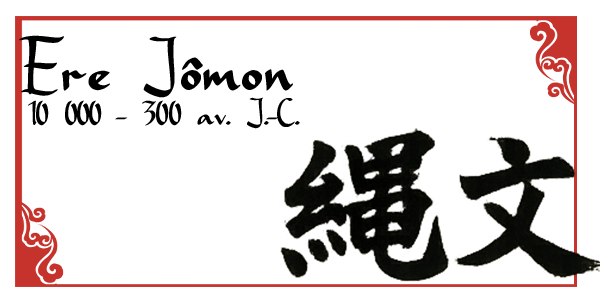
Origines et premiers peuplements
L'ère Jōmon correspond à l'époque où les premiers habitants du Japon se sont établis sur l'archipel. Ces populations semi-nomades étaient des chasseurs-cueilleurs, mais elles se sont également distinguées par leur maîtrise de la poterie, considérée comme l'une des plus anciennes au monde.
Mode de vie et culture matérielle
Les villages Jōmon étaient souvent situés près des côtes ou des rivières, reflétant une dépendance aux ressources maritimes. Les artefacts tels que les dogū (figurines en argile) illustrent leur spiritualité et leurs croyances.
L'introduction de l'agriculture
Cette période marque une transition majeure avec l'introduction de la riziculture irriguée, apportée probablement par des migrants venus de la péninsule coréenne. Cette innovation a transformé le mode de vie des habitants, les incitant à s'installer durablement.
Stratification sociale
L'ère Yayoi a vu l'émergence de sociétés hiérarchisées, avec des chefs locaux jouant un rôle clé dans la gestion des ressources. Les premiers contacts avec la Chine et la Corée ont enrichi la culture locale.
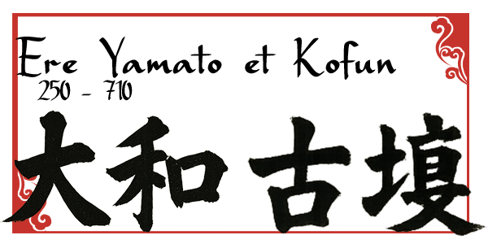
Formation des premières structures politiques
L'ère Yamato a été caractérisée par l'unification progressive des clans sous un pouvoir central. Les kofun, tombes monumentales en forme de trou de serrure, témoignent de cette centralisation et de l'émergence d'une aristocratie puissante.
L'influence continentale
Les relations avec la Chine des dynasties Wei et Tang ont influencé les institutions japonaises. Le bouddhisme, introduit au VIe siècle, a commencé à s’implanter.
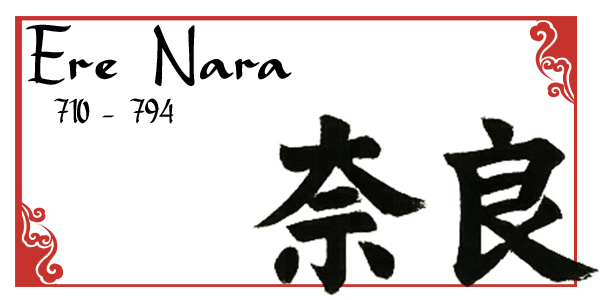
La première capitale permanente
L’ère Nara tire son nom de la première capitale fixe, Heijō-kyō (actuelle Nara). Cette période a vu l’institutionnalisation du bouddhisme comme religion d’État.
Développement culturel et administratif
Inspiré par le modèle chinois des Tang, le Japon a adopté un système administratif basé sur le ritsuryō, un code de lois.
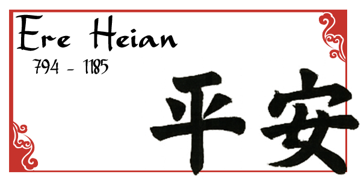
L’âge d’or de la culture japonaise
Avec l’installation de la capitale à Heian-kyō (Kyoto), cette ère a marqué l’essor de la culture japonaise, notamment dans les arts et la littérature. « Le Dit du Genji » de Murasaki Shikibu est une œuvre emblématique.
L’émergence des clans guerriers
Bien que l’aristocratie ait dominé la société, des clans comme les Taira et les Minamoto ont commencé à s’imposer, préfigurant la période féodale.
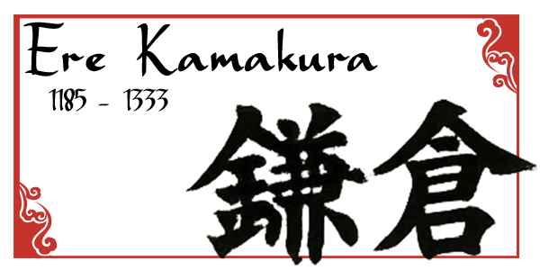
L’établissement du shogunat
La victoire des Minamoto a conduit à la création du premier shogunat sous Minamoto no Yoritomo, marquant le début de la domination des guerriers (samouraïs).
Menaces extérieures
Le Japon a repoussé deux invasions mongoles au XIIIe siècle grâce à des typhons surnommés kamikaze (« vent divin »), renforçant le mythe de l’invincibilité nationale.
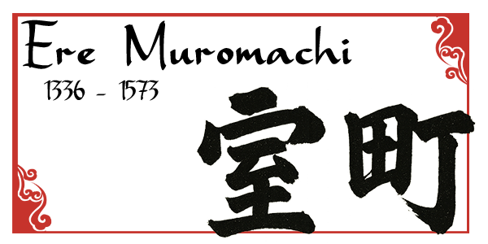
Une période de divisions
Cette ère a été marquée par des conflits internes, notamment la guerre Ônin, qui a plongé le pays dans une période de guerre civile connue sous le nom de Sengoku (« Époque des Provinces en guerre »).
Les premiers contacts européens
Les marchands portugais et les missionnaires jésuites sont arrivés au Japon au XVIe siècle, introduisant les armes à feu et le christianisme.
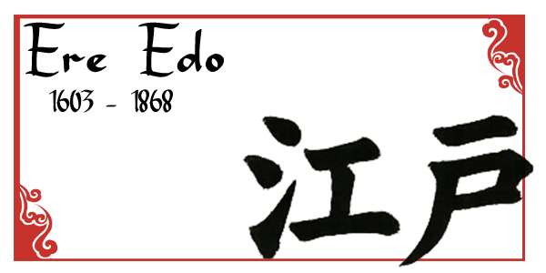
La paix sous le shogunat Tokugawa
Avec l’unification du Japon par Tokugawa Ieyasu, cette ère a été caractérisée par une stabilité politique et un isolement volontaire (sakoku).
Essor économique et culturel
Malgré l’isolement, le commerce interne a prospéré, et des formes artistiques comme le kabuki et les ukiyo-e ont émergé.
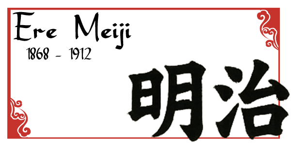
La modernisation et l’ouverture
La restauration Meiji a marqué le retour du pouvoir impérial et une transformation rapide vers une société moderne. Le Japon a adopté des institutions occidentales, notamment une constitution et une armée moderne.
Expansion impériale
Le Japon a vaincu la Chine (1895) et la Russie (1905), affirmant son statut de puissance mondiale.
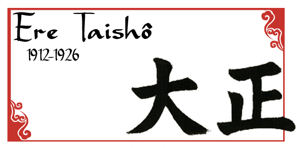
Une démocratie fragile
L’ère Taishō, marquée par le règne de l’empereur Taishō, fut une période de transition. Le Japon a connu une relative libéralisation politique avec l’émergence de partis politiques influents et l’instauration du suffrage universel masculin en 1925. Cette époque est souvent décrite comme l’âge d’or de la démocratie Taishō.
Rôle dans les affaires internationales
Pendant la Première Guerre mondiale, le Japon s’est aligné sur les Alliés, ce qui lui a permis d’étendre son influence en Asie et dans le Pacifique, notamment par l'acquisition de mandats sur d'anciennes colonies allemandes.
Montée du militarisme et Seconde Guerre mondiale
L’ère Shōwa a commencé avec l’accession au trône de l’empereur Hirohito. Cette période initiale fut marquée par une crise économique mondiale et une instabilité politique, qui ont favorisé la montée du militarisme.
Invasion de la Mandchourie (1931)
Le Japon a établi l’État fantoche du Mandchoukouo, marquant le début de sa politique expansionniste en Asie.
Deuxième Guerre sino-japonaise (1937-1945)
Ce conflit prolongé contre la Chine fut une prélude à l’implication du Japon dans la Seconde Guerre mondiale.
Participation à la Seconde Guerre mondiale
En s’alliant avec l’Allemagne et l’Italie, le Japon a attaqué Pearl Harbor en 1941, entraînant son implication dans le théâtre du Pacifique. Sa capitulation en 1945, après les bombardements atomiques d’Hiroshima et de Nagasaki, a mis fin à la guerre.
Occupation et reconstruction (1945-1952)
Sous l’occupation américaine dirigée par le général MacArthur, le Japon a adopté une nouvelle constitution en 1947, instaurant une monarchie constitutionnelle et renonçant à la guerre (à travers l’article 9). La réforme agraire et les transformations économiques ont jeté les bases de la reprise.
Miracle économique d’après-guerre
Dans les années 1950 et 1960, le Japon a connu une croissance économique spectaculaire. L’industrialisation rapide, soutenue par des investissements dans les technologies et les infrastructures, a fait du Japon la deuxième puissance économique mondiale. Les Jeux olympiques de Tokyo en 1964 ont symbolisé ce renouveau.
Les années de bulle économique (1980s)
La fin des années 1980 a été marquée par une bulle financière et immobilière. Bien que cette période ait semblé prospère, l’éclatement de la bulle au début des années 1990 a entraîné une crise prolongée.
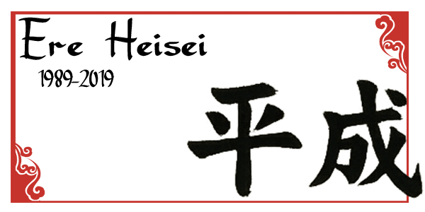
La "décennie perdue"
Les années 1990, souvent appelées la "décennie perdue", furent marquées par une stagnation économique persistante et des défis sociaux tels que le vieillissement de la population et la déflation.
Catastrophes naturelles
En 1995, le tremblement de terre de Kobe a causé d’importants dommages humains et matériels. En 2011, le tremblement de terre de Tōhoku et le tsunami qui a suivi ont entraîné la catastrophe nucléaire de Fukushima, suscitant des débats sur l’énergie au Japon.
Évolution sociopolitique
Le Japon a continué de jouer un rôle actif dans les affaires internationales, renforçant ses relations avec les États-Unis tout en maintenant une politique pacifiste.
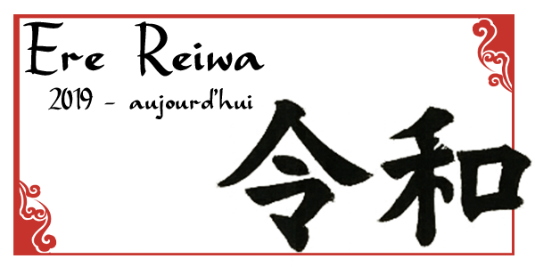
Modernisation et continuité
Sous le règne de l’empereur Naruhito, le Japon poursuit ses efforts pour moderniser son économie tout en s’attaquant à des problèmes pressants comme la démographie et l’environnement.
Impact mondial
Le Japon reste un leader mondial en matière de technologies et d’innovations. Les Jeux olympiques de Tokyo 2020 (tenus en 2021 en raison de la pandémie de COVID-19) ont souligné la résilience et la capacité d’adaptation du pays.